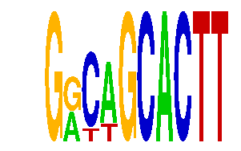

family_11 |
|---|
|  |
| Download PWM |
| Download instances (motifs) |
| Show motif distribution |
Query_ID | Query_Consensus | Subject_Name | Source_DB | Subject_ID | Length | Orientation | Offset | Divergence | Overlap | Subject_Consensus |
|---|---|---|---|---|---|---|---|---|---|---|
| family_11 | GGCAGCACTT | MGGAAGTG | JASPAR | PF0011 | 8 | reverse-complement | 5 | 0.067 | 5 | CGGAAGTG |
| family_11 | GGCAGCACTT | NKX25 | HOCOMOCO | NKX25_HUMAN.H10MO.C | 7 | reverse-complement | 5 | 0.282 | 5 | TYAAGTG |
| family_11 | GGCAGCACTT | SPI1 | JASPAR | MA0080.2 | 7 | reverse-complement | 6 | 0.437 | 4 | AGGAAGT |
| family_11 | GGCAGCACTT | SCGGAAGY | JASPAR | PF0003 | 8 | reverse-complement | 6 | 0.515 | 4 | CCGGAAGT |
| family_11 | GGCAGCACTT | ELF1 | JASPAR | MA0473.1 | 13 | reverse-complement | 5 | 0.670 | 5 | NAANCAGGAAGTG |
| family_11 | GGCAGCACTT | NFIA | HOCOMOCO | NFIA_HUMAN.H10MO.S | 7 | as given | -3 | 0.766 | 4 | NTTGGCN |
| family_11 | GGCAGCACTT | EHF | JASPAR | MA0598.1 | 8 | as given | 6 | 0.795 | 4 | CCTTCCTG |
| family_11 | GGCAGCACTT | ETV6 | HOCOMOCO | ETV6_HUMAN.H10MO.D | 11 | reverse-complement | 5 | 0.837 | 5 | NNCCGGAAGTR |
Sequence | Start_position (from start) | Start_position (from end) | Average conservation | Best conservation score | Instance_with_best_CS | Best_Z-score | Instance_with_best_ZS | Strand |
|---|---|---|---|---|---|---|---|---|
| chr13:12409200-12411000 | 309 | 319 | 0.3688 | 0.617 | GRCWGCACTT | 12.745697 | GRCWGCACTT | 1 |
| chr13:45717600-45719300 | 795 | 805 | 0.0065 | 0.013 | GRCWGCACTT | 12.745697 | GRYAGCACTT | 1 |
| chr5:148661430-148663100 | 1012 | 1022 | 0.0162 | 0.044 | GRCWGCACTT | 12.745697 | GRCWGCACTT | -1 |
| chr4:147339344-147342300 | 726 | 736 | 0.9461 | 0.988 | GRCWGCACTT | 12.745697 | GRYAGCACTT | 1 |
| chr9:24767135-24768900 | 136 | 146 | 0.0035 | 0.01 | GRCWGCACTT | 12.745697 | GRYAGCACTT | 1 |
| chr9:24699628-24703000 | 1999 | 2009 | 0.0023 | 0.012 | GRYAGCACTT | 12.745697 | GRCWGCACTT | 1 |
| chr13:45824900-45826600 | 423 | 433 | 0.0006 | 0.002 | GRYAGCACTT | 12.745697 | GRYAGCACTT | 1 |
| chr10:6916200-6918616 | 604 | 614 | 0.0003 | 0.001 | GRCWGCACTT | 12.745697 | GRYAGCACTT | 1 |
| chr13:9453470-9454470 | 478 | 488 | 0.0025 | 0.007 | GRCWGCACTT | 12.745697 | GRYAGCACTT | 1 |
| chr4:133849659-133851500 | 176 | 186 | 0.0114 | 0.056 | GRCWGCACTT | 12.745697 | GRYAGCACTT | 1 |
| chr10:52894700-52896300 | 1393 | 1403 | 0.9998 | 1 | GRYAGCACTT | 12.745697 | GRYAGCACTT | 1 |
| chr2:76807490-76808490 | 603 | 613 | 0.0004 | 0.002 | GRCWGCACTT | 12.745697 | GRYAGCACTT | 1 |
| chr5:130276300-130277311 | 702 | 712 | 0.001 | 0.005 | GRCWGCACTT | 12.745697 | GRCWGCACTT | 1 |